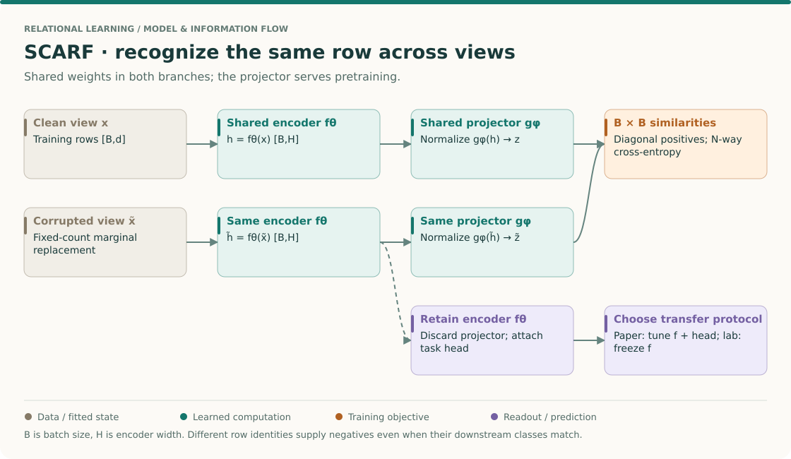
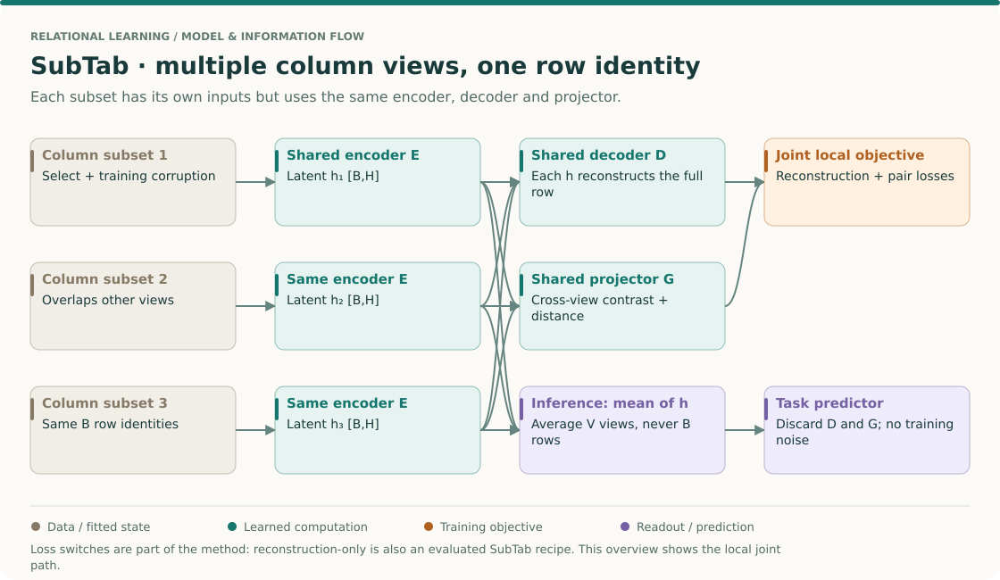
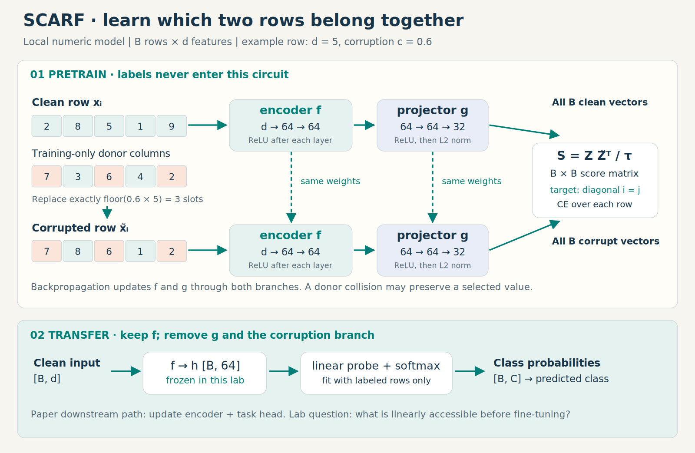
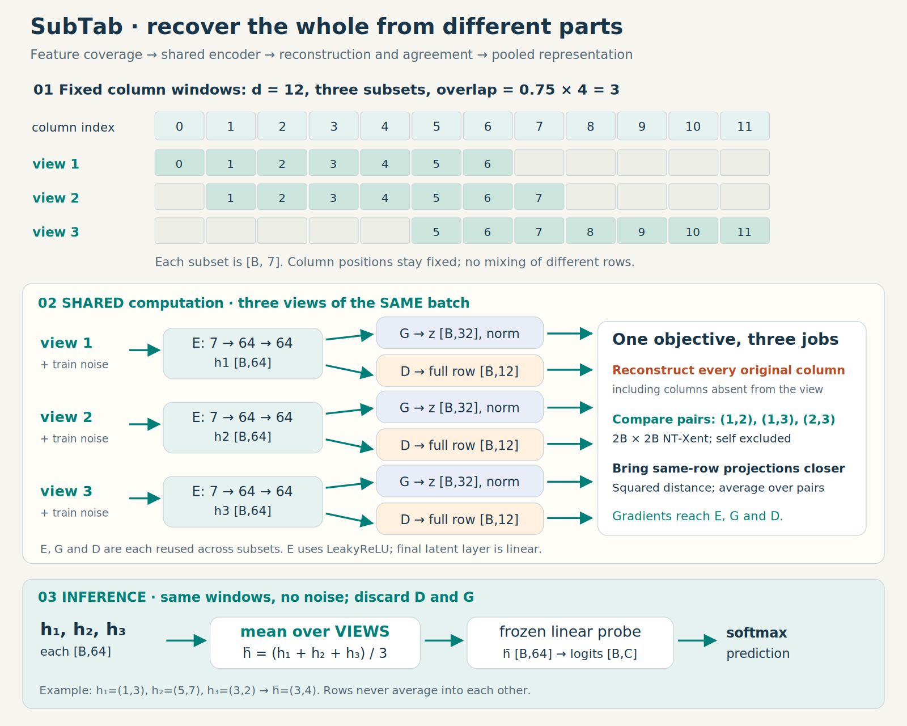
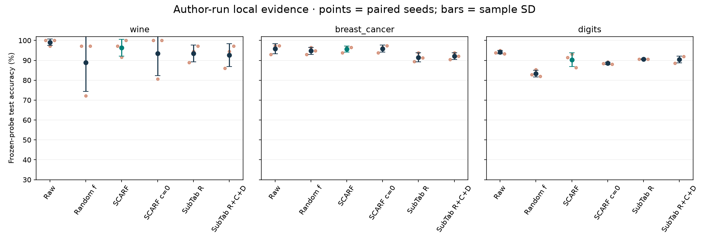
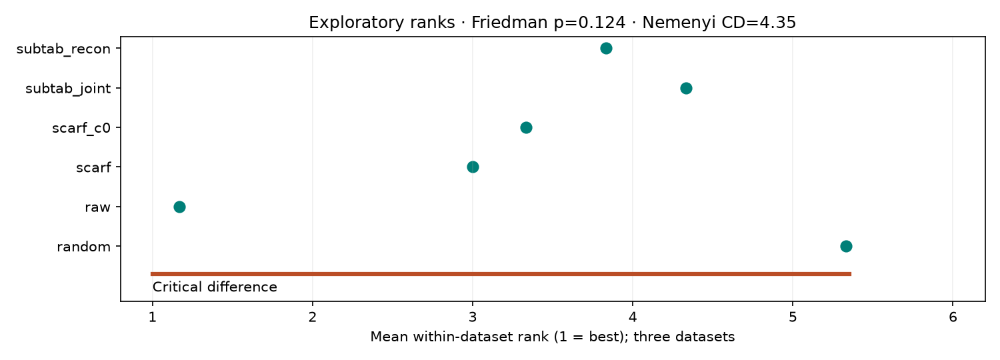

Year 2 · Quarter 4 · Lesson 072
SCARF / SubTab: learning from different views
Repair a row → recognize its companion → reconcile partial observations → test the representation.
See the idea · then trace the details
SCARF and SubTab: preserve row identity across views
The common idea is agreement; the view construction and objectives differ.
1SCARF: replace cells
Clean row ↔ marginally corrupted row
SCARF pairs a clean row with a corrupted view. Both pass through the same encoder and projector.
2SubTab: select columns
Overlapping column subsets of the same row
SubTab constructs several views from subsets of columns and combines reconstruction with configured representation objectives.
3Transfer the encoder
Match views by row identity, then fit the task
Contrastive similarities identify same-row pairs. Downstream use retains the learned representation route, not necessarily the pretraining projector.
Pause and predict: Does a different row with the same class automatically become a positive pair?
No. In the instance-contrastive construction, positive pairs are views of the same row, not merely rows sharing a downstream label.
Answer: No. In the instance-contrastive construction, positive pairs are views of the same row, not merely rows sharing a downstream label.
Start with the question VIME leaves open¶
In Lesson 71, an encoder learned from unlabeled rows by repairing corrupted values and detecting changes. An encoder is a function that turns an input row into a vector of learned features. Repairing an input gives that function a training signal even when the target label is unavailable. But accurate repair and useful classification are different goals: a model can spend its capacity reconstructing large, predictable nuisance variables.
This lesson asks a different question: what if the training signal asked the encoder to recognize a row across two incomplete or corrupted observations? SCARF makes a second observation by replacing values. SubTab makes several observations by selecting different columns. Their choices determine what information the representation is encouraged to preserve.
The connection to the mission is concrete. Before making an entity representation invariant to missing columns, dropped relations, or sampled neighbors, we need to decide which changes preserve the prediction target. Tabular views give us a small, inspectable place to learn that discipline. A useful augmentation for one task can erase the signal for another.
Your outcome: trace both training-to-prediction paths, implement three operations used by the running models, and defend a frozen linear-probe result. Suggested pacing: 35 minutes paper mechanisms, a separate 45–60 minute lab. You may need longer for the experiment and interpretation.
Before reading on, answer from memory: what are VIME’s two targets? Can replacing a value leave it unchanged? Why must unlabeled test rows stay outside an inductive pretraining pool? Write your answers before opening the check.
Check the bridge from Lesson 71
VIME trains reconstruction and mask estimation; the implementation studied in L071 targets actual changes, so donor collisions matter. Unlabeled test features still reveal the test distribution. Using them changes the experiment to a transductive one. This lesson uses an inductive boundary: training rows alone define preprocessing, donors and pretraining.
THE BIG PICTURE · LESSON 072
Build on what you know. VIME in Lesson 71 made the original feature values a target. SCARF and SubTab ask what should stay stable across views; this revisits SAINT in Lesson 47 at the level of the actual positive pairs and loss denominator.
The next question. Lesson 73 holds these mechanisms fixed and asks when their extra training buys label efficiency. An attractive representation objective is the hypothesis to test, not the result.
Open the SSL → relational → graph model map · Spend 15–20 minutes tracing this overview before the detailed mechanism and lab.
Two kinds of partial observation¶
Follow the arrows by block number. Branches are separate paths; numbers identify blocks, not a mandatory execution order.
1 Data / fitted stateClean view x
Training rows [B,d]
2 Data / fitted stateCorrupted view x̃
Fixed-count marginal replacement
3 ComputationShared encoder fθ
h = fθ(x) [B,H]
4 ComputationSame encoder fθ
h̃ = fθ(x̃) [B,H]
- → 6 · Same projector gφ
- → 8 · Retain encoder fθ · transfer (dashed path)
5 ComputationShared projector gφ
Normalize gφ(h) → z
6 ComputationSame projector gφ
Normalize gφ(h̃) → z̃
7 Training objectiveB × B similarities
Diagonal positives; N-way cross-entropy
Endpoint of this pictured path.
8 OutputRetain encoder fθ
Discard projector; attach task head
9 OutputChoose transfer protocol
Paper: tune f + head; lab: freeze f
Endpoint of this pictured path.
Shared weights in both branches; the projector serves pretraining. B is batch size, H is encoder width. Different row identities supply negatives even when their downstream classes match.


Follow the arrows by block number. Branches are separate paths; numbers identify blocks, not a mandatory execution order.
1 Data / fitted stateColumn subset 1
Select + training corruption
2 Data / fitted stateColumn subset 2
Overlaps other views
3 Data / fitted stateColumn subset 3
Same B row identities
4 ComputationShared encoder E
Latent h₁ [B,H]
5 ComputationSame encoder E
Latent h₂ [B,H]
6 ComputationSame encoder E
Latent h₃ [B,H]
7 ComputationShared decoder D
Each h reconstructs the full row
8 ComputationShared projector G
Cross-view contrast + distance
9 OutputInference: mean of h
Average V views, never B rows
10 Training objectiveJoint local objective
Reconstruction + pair losses
Endpoint of this pictured path.
11 OutputTask predictor
Discard D and G; no training noise
Endpoint of this pictured path.
Each subset has its own inputs but uses the same encoder, decoder and projector. Loss switches are part of the method: reconstruction-only is also an evaluated SubTab recipe. This overview shows the local joint path.


Read two figures as competing design choices¶
Read SCARF Figure 1 and Algorithm 1 beside SubTab Figures 1–2 and §2. Annotate three differences: how views are constructed, what the loss compares, and which operation produces the representation used after pretraining. Our diagrams describe the shared computation; the body below distinguishes paper fine-tuning from the local frozen probes.
Derive the axes before implementing the loss¶
- Keep identities attached. Start with B rows. For SCARF, clean row i and corrupted row i remain a pair even if several values changed. Randomly shuffling only the corrupted rows while keeping diagonal targets silently makes the wrong pairs positive.
- Separate h from z. h is the reusable encoder output. z is its projection for contrastive training. A good separation in z need not imply that every dimension of h has a direct semantic meaning. At transfer, follow the diagram to h rather than leaving the temporary projector attached by accident.
- Identify each softmax row. In the SCARF layout a clean anchor compares with B corrupted candidates. With three identical candidates, the correct probability is 1/3 and cross-entropy is log(3), regardless of their absolute similarity. Thus “positive similarity is large” is not a sufficient training diagnostic.
- Change the view definition for SubTab. Stack latent vectors as [V,B,H], where V counts feature subsets. Mean over axis 0 returns [B,H]. Mean over axis 1 returns [V,H] and mixes people or records together. Both calculations run successfully, but only the first preserves one representation per row.
- Name the pressure from each loss. Reconstruction preserves information about the full row. Contrastive recognition separates row identities. Projection distance pulls same-row views together. They can disagree when an augmentation erases target-relevant information, and their numerical scales depend on how coordinates are reduced.
Predict the failure: two rows have the same class but are contrastive negatives
The objective still pushes their projected representations apart because its target is row identity. Downstream supervision may later recover a shared class direction. This is why a contrastive objective and a classification objective should not be treated as interchangeable.
Your intermediate artifact: produce a 3×3 candidate matrix with the positives marked, then a [3,2,2] SubTab tensor with the correct averaging axis marked. Explain why the two diagrams have different inference paths before running their probes.
1 · From repairing values to identifying a companion¶
Imagine a customer row containing tenure, balance, visits, region and purchases. We create a second row by replacing three entries with values observed in the corresponding training columns. We still know which original produced it. That known relationship supplies a positive pair without a class label. Other rows’ corrupted companions become negative candidates. Here, “negative” means a different row identity; it does not mean a different class.
This distinction explains both the opportunity and the risk. Recognizing a companion encourages the model to retain clues that survive corruption. Yet two different customers who will both churn can be negatives. Conversely, replacing the sole feature that determines churn can destroy what makes the positive useful. The augmentation is therefore a hypothesis about which information should survive, not a proof of semantic equivalence.
SCARF applies this idea to marginal feature replacement and a contrastive objective, then transfers the learned encoder to supervised learning. Read SCARF Algorithm 1 and Figure 1 alongside the next diagram. The paper’s experiments report improvements over its baselines across 69 classification datasets; our small frozen-probe experiment tests a narrower question.
Model architecture · SCARF’s complete route¶


Follow the orange cells first. They change the second input but leave its identity paired with the first input. Then follow both teal branches: the encoder weights are shared, so this is one function evaluated twice. Its output h is the representation we intend to reuse. A separate projection head, g, transforms h into z for the pretraining comparison. The final normalization makes the comparison depend on direction rather than vector length.
The loss sends gradients through both branches, updating f and g. At transfer, the corruption machinery and g disappear. The paper fine-tunes an encoder and a task head. Our linear probe instead freezes f and learns only a linear classifier on h. That deliberate change asks whether useful class information is already accessible through a linear boundary. It does not measure the full benefit of supervised fine-tuning.
Local architecture details: numeric inputs have shape [B,d], where B is batch size and d is feature count. Two linear layers with ReLU produce h of shape [B,64]. ReLU maps negative activations to zero. The projector maps 64→64→32, with ReLU between layers; its vectors are normalized inside the loss. A C-class probe maps h to C scores, then softmax turns those scores into probabilities. These compact widths are our teaching configuration, not a claim of paper-model parity.
The paper’s experimental network is larger: a four-layer encoder and two-layer pretraining/classification heads, with hidden width 256. It uses validation-based stopping and supervised fine-tuning. The diagram deliberately pictures our runnable compact variant; the shared-branch logic and transfer boundary carry over, while parameter counts and evaluation claims do not.
A corruption trace you can audit¶
For x = [2,8,5,1,9], rate c = 0.6 selects exactly floor(5×0.6) = 3 positions. Suppose they are columns 0, 2 and 4, and independent donor draws return 7, 6 and 2. The companion becomes [7,8,6,1,2]. Each donor value comes from its own column’s training distribution; selecting one whole donor row would preserve extra cross-column dependence and define another augmentation.
The selected-count rule also differs from independently flipping a coin for every feature: a coin rule has a random count. Neither rule guarantees that selected values actually change. If a donor returns 5 for column 2, that selected cell remains 5. These distinctions are exactly what the first lab CHECK tests.
2 · Turn companion recognition into a differentiable loss¶
Now the architecture needs a precise training instruction. For each clean vector zᵢ, compare it with every corrupted vector z̃ⱼ in the batch. Define cosine similarity sᵢⱼ = (zᵢ·z̃ⱼ)/(‖zᵢ‖‖z̃ⱼ‖). A value near 1 means their directions align. Divide by a positive temperature τ before softmax; smaller τ makes score differences more decisive.
The N×N score matrix is a classification problem with N choices per row. For clean anchor i, its correct choice is corrupted candidate i. Thus the diagonal contains positives. The denominator includes the positive:
pᵢ = exp(sᵢᵢ/τ) / Σⱼ exp(sᵢⱼ/τ)
ℓᵢ = −log pᵢ; L = meanᵢ ℓᵢ
Cross-entropy with targets [0,1,…,N−1] implements that instruction stably, without explicitly exponentiating large scores. The paper writes the denominator as a mean, so its displayed objective equals this cross-entropy minus log N. That additive constant leaves the gradients unchanged for fixed N. It does mean that raw loss numbers require a stated convention.
Work it out. Take two unit vectors [1,0] and [0,1] in each branch, with τ=1. The score matrix is [[1,0],[0,1]]. Each correct probability is e/(e+1)=0.7311, and the cross-entropy is 0.3133. Removing the diagonal would remove the correct answer. Adding clean-to-clean candidates would change the learning problem.
Use the temperature control to predict the change before reading the output. Then switch the candidate layout. With both views as anchors, each anchor has one matching companion and two orthogonal negatives in this example, producing log(1+2/e)=0.5514. That is the layout used by the SubTab contrastive operator we audit, not SCARF’s N-way layout.
Reasoning check: can collapse look aligned?
Yes. If all N vectors are identical, every positive has cosine similarity 1, but so does every negative. The correct probability is 1/N and the cross-entropy is log N. Alignment alone is insufficient. For N=1, there is no negative competition and this recognition objective carries no useful signal.
The derivative with respect to a row’s unscaled similarity is (pᵢⱼ − 1[j=i])/τ, before the batch mean. A wrong candidate with high probability gets a stronger downward signal. This explains why temperature changes optimization, and why same-class false negatives can matter: their similarity is discouraged despite their shared downstream label.
3 · What if the view is a different set of columns?¶
SCARF retains the full input width and replaces values. Suppose instead that measurements arrive in groups: one system knows transactions, another knows visits. A representation should combine what each partial observation can tell us. This motivates SubTab’s feature subsets.
SubTab shares an encoder across overlapping column windows, reconstructs the full row, and can add contrastive and projection-distance losses. At prediction, it aggregates the subset representations. Read SubTab §2 and Figures 1–2. The important shift is that reconstruction and agreement now work together: each subset must support a useful account of the whole.
Model architecture · SubTab’s complete route¶


Start at the coverage map rather than the neural layers. Row identity is preserved horizontally across all three views; the available columns change. The three paths use the same encoder E. Each latent vector h feeds two destinations: decoder D predicts the full original row, while projector G supplies a space for agreement losses. Reconstructing unseen columns forces the decoder to use statistical relationships, though those relationships need not be useful for the class label.
The bottom path answers the deployment question. We retain the same subset layout, remove training noise, evaluate E for each subset, and average the latent vectors for each row. We discard D and G. Averaging over the row axis would mix different examples and destroy their identities; the third lab task makes that mistake observable.
The pictured d=12 layout follows the released indexing with three subsets and overlap 0.75: [0…6], [1…7], [5…11]. “75% overlap” here is relative to the base width floor(d/3)=4, not the resulting seven-column view. If d is not divisible by three, this released formula can omit trailing columns from every encoder input. Our implementation exposes that behavior; the decoder still predicts all d columns. Inspect subsets(13) before interpreting the wine result.
The losses are configurable, rather than mandatory ingredients of every reported result. In particular, the paper’s additional OpenML experiments use reconstruction-only SubTab. Our joint-versus-reconstruction comparison asks whether adding agreement helps this local recipe; it does not assume the most elaborate loss must win.
Why three loss terms?¶
Reconstruction asks, “can this part predict the whole?” Contrastive recognition asks, “which other-view vector belongs to this row?” Squared projection distance asks, “how close are the same row’s two projections?” They impose different constraints. A constant representation minimizes agreement distance but cannot generally reconstruct varying rows or identify companions.
For the local joint model, average reconstruction over the three views. For each of the three view pairs, add symmetric NT-Xent and squared projection distance, then average these pair losses. NT-Xent concatenates two B-row views, masks self-similarity, and keeps the paired companion among 2B−1 candidates. This is the matrix layout you toggled above.
The released loss code sums squared errors over coordinates and averages over rows. We preserve that reduction. For reconstruction residual [1,2,0], its row contribution is 5, not 5/3. Consequently, dimensionality affects the balance with the contrastive term. Quietly replacing this with an all-cell mean changes the method.
The aggregation trace uses h₁=(1,3), h₂=(5,7), h₃=(3,2). Their mean is (3,4). Hide a view and predict the new mean. This is a computation exercise, not a claim that losing a view improves or harms classification; that requires a measured downstream task.
4 · From an appealing objective to an honest test¶
We now have two plausible solutions. Plausibility is not evidence of useful representations. This connects back to Lesson 59’s selection boundaries: representation training, probe fitting, regularization selection, and final scoring each need an information boundary. It also connects to Lesson 71’s label accounting: validation labels are part of the annotation cost.
Local protocol, fixed before scoring: three real datasets bundled with scikit-learn—wine, breast cancer and digits—each with three paired split/model seeds (0,1,2). Stratified splits allocate approximately 70%/10%/20% to train/validation/test. Pretraining and input standardization use only the training rows; labels are hidden during pretraining. The benchmark split designer uses labels for stratification; the pretrainer receives no labels. The probe sees labels from 25% of training rows, and selects C from {0.1,1,10} using validation accuracy. Its feature standardizer is fitted on those labeled training rows. Validation labels therefore add roughly 10% of the full dataset to the labeled budget. The split record gives exact counts.
We pretrain for 40 fixed epochs with Adam at 0.001, batches of at most 64, no early stopping. SCARF uses c=0.6 and τ=1. SubTab uses three windows, overlap 0.75, and independent Gaussian noise with standard deviation 0.1 on entries selected with probability 0.3 during training only. All probe encoders remain frozen. Test rows are transformed and scored only after the training choices are fixed; no statistic is fitted to them.
| Arm | What it asks | What the comparison cannot isolate |
|---|---|---|
| Raw standardized features | Can a linear classifier already solve the task? | The value of a nonlinear supervised network |
| Random frozen encoder | Does architecture alone supply useful features? | Optimization without the SSL objective |
| SCARF | Does corrupted-companion training help over the identical random encoder? | Which individual pretraining choice caused a gain |
| SCARF c=0 | What changes when replacement is removed but instance recognition remains? | A no-training baseline; this arm still learns |
| SubTab reconstruction | What can subset reconstruction learn? | The effect of subsetting versus a full-row autoencoder |
| SubTab joint | What do contrastive and distance terms add together? | Their separate effects, or a perfectly matched SCARF architecture |
Predict which dataset will show the largest SCARF gain over its random encoder, and whether raw features might still win. Then reveal the evidence. These arms compare recipes, not a fair contest that isolates every architecture decision.
Author-reference accuracy (%), mean ± sample SD. These are saved author results, not your current kernel output.
| Dataset | Raw | Random | SCARF | SCARF c=0 | SubTab R | SubTab R+C+D |
|---|---|---|---|---|---|---|
| wine | 99.07 ± 1.60 | 88.89 ± 14.43 | 96.30 ± 4.24 | 93.52 ± 11.23 | 93.52 ± 4.24 | 92.59 ± 5.78 |
| breast_cancer | 95.91 ± 2.53 | 94.74 ± 1.75 | 95.61 ± 1.52 | 95.91 ± 1.83 | 91.52 ± 2.21 | 92.11 ± 1.75 |
| digits | 94.07 ± 0.85 | 83.33 ± 1.73 | 90.28 ± 3.47 | 88.52 ± 0.58 | 90.65 ± 0.16 | 90.46 ± 1.70 |
Paired SCARF minus random-encoder gains (percentage points):
- breast_cancer: +0.88, +0.00, +1.75.
- digits: +8.61, +7.78, +4.44.
- wine: +0.00, +19.44, +2.78.
Observed in this run: SCARF improves the random encoder at the mean on all three datasets, but the raw-feature probe has higher mean accuracy on all three. Joint SubTab does not consistently beat reconstruction-only SubTab. These outcomes separate learning a representation from choosing the best prediction recipe.
Read these gains alongside the raw-feature arm. A positive gain over random features need not beat the original inputs. Differences between SubTab and SCARF also include different architectures and objectives. This experiment cannot attribute them solely to the choice of views.




Sample standard deviation describes variation across these paired seeds. The seeds change splits and initialization together, so this is neither a confidence interval over new datasets nor separate estimates of those two variance sources. Ranks first average seeds within each dataset, then weight the three datasets equally. The rank diagram and Friedman/Nemenyi audit are exploratory; three chosen datasets cannot establish broad superiority or equivalence.
What was actually reproduced?¶
| Evidence bucket | Status and boundary |
|---|---|
| SCARF equation | Independent numeric checks; paper’s N-way layout, exact selected count, and marginal donors; CE offset disclosed |
| SubTab released operator | Pinned NT-Xent outputs and input gradients checked against the author release on two batch sizes |
| Local training | Fresh fits and frozen probes on three datasets; table and seed-level predictions archived |
| Original benchmark tables | INCOMPARABLE: datasets, architectures, schedules, downstream protocol and repetitions differ |
| Larger run | NOT_RUN until the explicit operator is executed; increasing epochs alone does not establish fidelity |
| Live Colab and deployment | NOT_CHECKED in this delivery; local notebook and browser checks are recorded separately |
The paper-code comparison checks an operator, not the full released model or training procedure. Read the reproduction contract and source audit before making a stronger claim.
5 · Implement, interpret, and carry the question forward¶
Open the lab preview or student notebook. The model and training loop are visible. Your three TODOs implement column-respecting corruption, SCARF’s N-way loss, and SubTab’s view aggregation. Every TODO has an immediate independent CHECK and is called by the actual experiment. Passing these fixtures is necessary; the written interpretation remains part of the exit.
EXIT: produce all 54 evaluation records, report each paired SCARF-minus-random gain, account for validation labels, and explain one case where the result limits your initial prediction. Diagnose how replacing exact-count corruption with independent masks, confusing N-way with 2N-way loss, or averaging different rows changes the experiment. Explain why a better frozen probe is not automatically evidence of better fine-tuning.
Tomorrow, explain both diagrams from a blank page before reopening them. In one week, recreate the two-candidate loss calculation and the subset mean from memory. Ask the tutor about any unclear step, and paste your EXIT interpretation for feedback; creating this lesson does not mark it mastered.
The next question: once we can build these representations, when is their extra training worthwhile? Planned Lesson 73 varies label availability and the match between unlabeled and downstream data. The connection is causal: today fixes the machinery; next we vary the conditions under which that machinery should help. Later, relational pretraining will inherit the same question about which entity views preserve task information.
Primary reading: Bahri et al., SCARF, Algorithm 1 and Figure 1, then Ucar et al., SubTab, §2 and Figures 1–2. Use the printable reference after attempting retrieval.
Paper reproduction track¶
The paper reproduction section in the companion notebook includes the full runnable paper/release implementation after EXIT, separately from its compact teaching experiment. Read the reproduction guide for the named target, full-data commands, source pins and remaining gaps. The full model and training code are visible in the notebook. Smoke execution and source equivalence are checks; published-result reproduction requires the aligned experiment and its measured comparison.